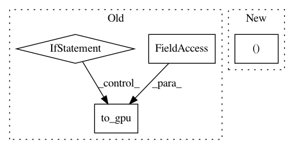

ad60498885593181f25f02cf01a72ef8f3f18167,dqn.py,DQN,_compute_loss,#DQN#Any#Any#Any#,124
Before Change
batch_q_target = self._compute_target_values(
experiences, gamma, cuda.to_cpu(batch_q.data))
if self.gpu >= 0:
batch_q_target = cuda.to_gpu(batch_q_target, self.gpu)
batch_q_target = Variable(batch_q_target)
if errors_out is not None:
del errors_out[:]
After Change
xp.asarray(
[elem["action"] for elem in experiences], dtype=np.int32))
batch_q = F.reshape(qout.evaluate_actions(
batch_actions), (batch_size, 1))
batch_q_target = F.reshape(
self._compute_target_values(experiences, gamma), (batch_size, 1))
In pattern: SUPERPATTERN
Frequency: 3
Non-data size: 4
Instances
Project Name: chainer/chainerrl
Commit Name: ad60498885593181f25f02cf01a72ef8f3f18167
Time: 2016-06-03
Author: muupan@gmail.com
File Name: dqn.py
Class Name: DQN
Method Name: _compute_loss
Project Name: chainer/chainer
Commit Name: 9cc12aa619dfd814a69777459eff8c3aa8ad776f
Time: 2019-08-04
Author: ecastill@preferred.jp
File Name: tests/chainer_tests/functions_tests/connection_tests/test_deconvolution_nd.py
Class Name: TestDeconvolutionND
Method Name: check_forward_consistency
Project Name: chainer/chainercv
Commit Name: 8b084618a0ba7d0f79275c3e5578c85b4d6d8279
Time: 2017-05-26
Author: yuyuniitani@gmail.com
File Name: chainercv/links/loss/semantic_segmentation_loss.py
Class Name: PixelwiseSoftmaxClassifier
Method Name: __call__